<header class="header sticky-top">
    <div class="container-fluid px-0">
        <nav class="navbar navbar-expand-lg navbar-light navbar-bg">
            <a href="/" class="brand">
            </a>
            <button class="navbar-toggler" type="button" data-toggle="collapse" data-target="#navbarNav"
                aria-controls="navbarNavAltMarkup" aria-expanded="false" aria-label="Toggle navigation">
                <span class="navbar-toggler-icon"></span>
            </button>
            <div class="collapse navbar-collapse" id="navbarNav">
                <ul class="navbar-nav ml-auto">
                    <li class="nav-item">
                        <a class="nav-link" routerLink="adopt">動物領養</a>
                    </li>
                    <li class="nav-item">
                        <a class="nav-link" routerLink="hospital">動物醫院</a>
                    </li>
                    <li class="nav-item active">
                        <a class="nav-link" routerLink="lost">尋找寵物<span class="sr-only">(current)</span></a>
                    </li>
                </ul>
            </div>
        </nav>
    </div>
</header>